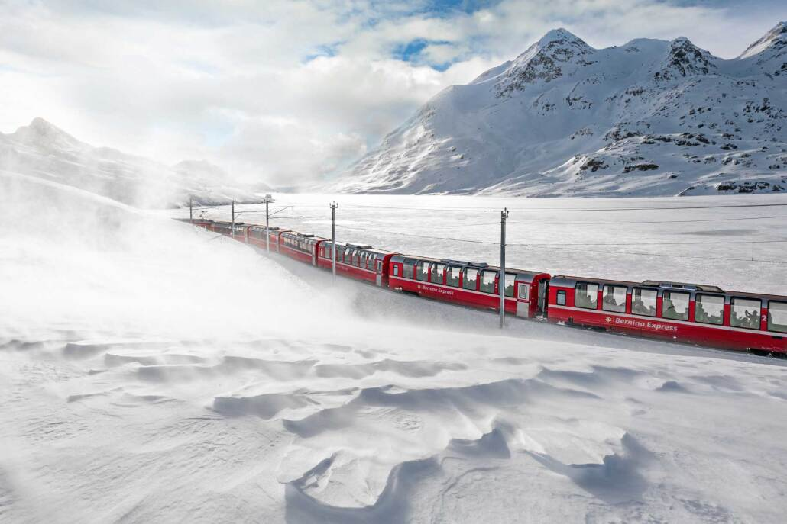

Are you dreaming about going abroad next Christmas? Check out what Switzerland can offer you.
- One of the most incredible facts about Switzerland is that the Swiss Alps cover around 58% of the land area. Despite the abundance of mountains, the country’s landscape is actually pretty diverse. In the northern part of the Alps, like the Bernese Oberland, you’ll find that the scenery is very green and vibrant. While in the south like Valais, it’s drier and rougher. You’ll also see stunning lakes and villages full of palm trees in between.
- Calling all budget travelers! Here’s a fun fact about Switzerland that you’re sure to appreciate: you don’t need to break out a calculator to figure out how much you’re going to tip. The tip is already included in the final price.
- Because of the popularity of the ski resorts and the Alps, Switzerland has gained a reputation for being a cold country. But the climate is actually considered more moderate rather than cold because of the nearby Atlantic Ocean. If you’re hoping for snow days, it’s best to visit in January, February, and March.
- If you’re planning to drive around Europe, one of the most important facts about Switzerland to know is that there are several places that don’t allow cars. Instead, you can take a train, bus, and even a boat to reach the village and enjoy the tranquil atmosphere.
